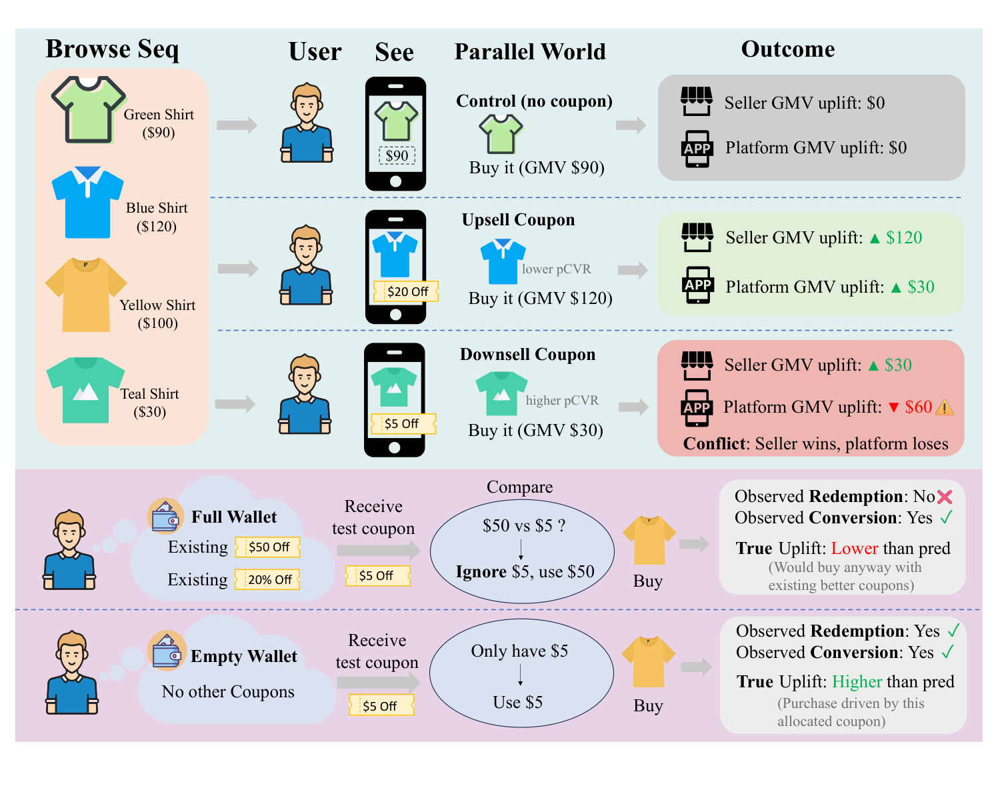
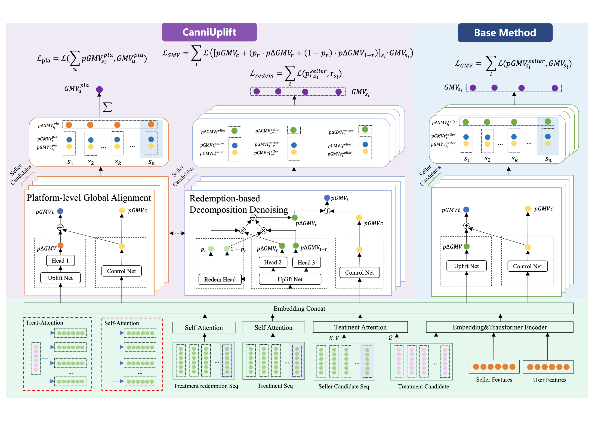
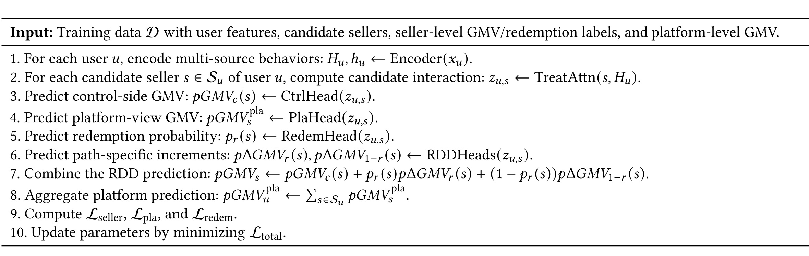
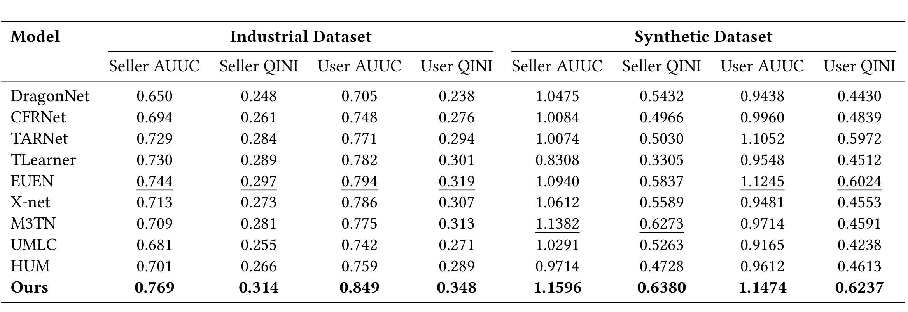
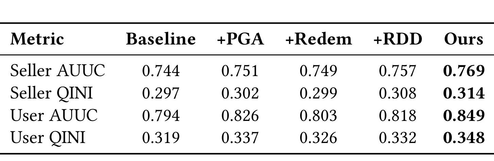
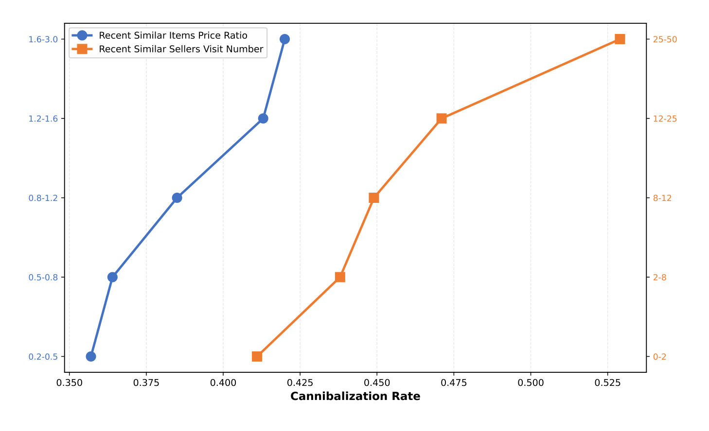
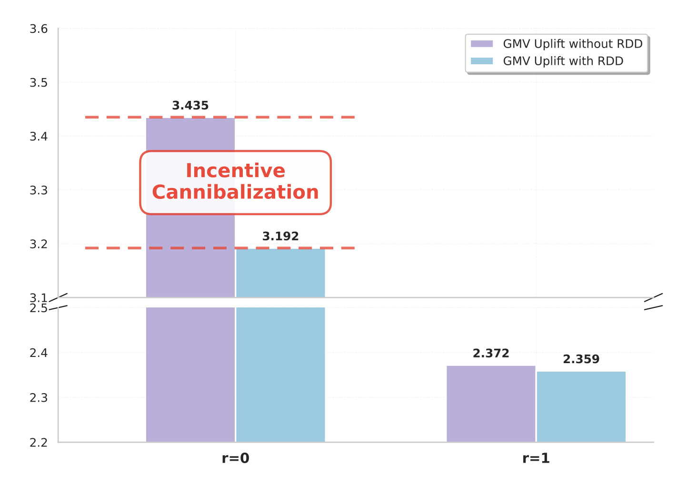
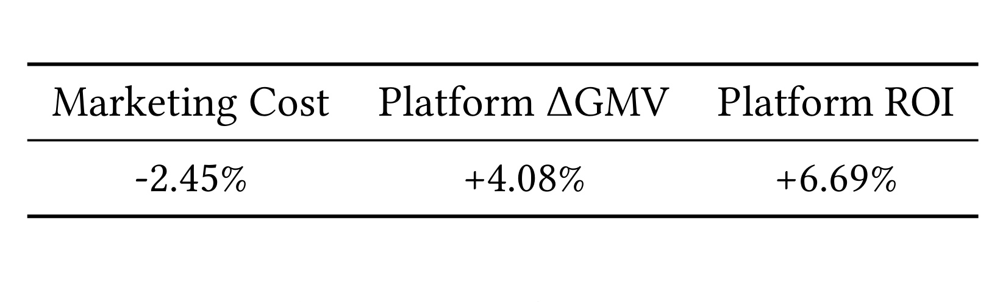

CanniUplift：面向电商 uplift 建模的卖家级与激励级 cannibalization 缓解框架
这篇论文讨论的是一个非常贴近平台经营的问题：电商平台给用户发券，并不是只要某个店铺成交了，就能说明平台真的多赚了一笔。论文题为 CanniUplift: A Holistic Framework for Mitigating Seller and Incentive Cannibalization in E-commerce Uplift Modeling，作者来自 Taobao & Tmall Group of Alibaba，arXiv 入口为 arXiv:2607.05242，论文标注为 KDD 2026。事实包中原先没有核验到完整机构，PDF 首页显示作者机构主要是淘宝天猫集团，因此这里按 PDF 记录机构来源；目录名沿用本轮 worker 分配的“多校-CanniUplift”。
论文的核心不是再提出一个普通的 ITE 网络，而是指出大规模多卖家 marketplace 中，传统 uplift 建模背后的 SUTVA 假设会被两类业务机制同时破坏：一类是店铺之间的消费替代，另一类是优惠券核销链路里的归因噪声。CanniUplift 因此把“单店 GMV uplift”提升为“平台净增量 GMV”，并用核销行为把 treatment 后的转化拆成更干净的路径。
1. 背景和问题
在常规 uplift 建模里，平台希望估计某个用户收到某个 treatment 之后，相比不收到 treatment 多产生多少增量收益。这个建模设定在单业务、单商品、单卖家或 treatment 互相独立的场景中比较自然：给券前后只需要比较同一个用户的潜在结果，模型学习的就是个体 treatment effect。但多卖家电商不是这样。用户的钱包、注意力和浏览路径在多个店铺之间共享，给 A 店铺的券可能把本来会流向 B 店铺的消费转走；用户即便在 treatment 组下购买，也可能没有使用被分配的券，而是本来就想买，或者被别的更高价值权益驱动。这样一来，模型看到的“成交”不一定是平台增量，更不一定是当前这张券带来的增量。
个性化激励分配在多卖家电商中不能再把“给某个店铺发券后的转化”直接当作平台增量：优惠可能只是把用户从别的店铺或更高价商品上拉走，也可能只是给本来会购买或被其他权益驱动的转化记了功。
论文把这种问题归纳为 Multi-source Cannibalization Effects。第一类是 seller-level cannibalization，也就是卖家级挤出。平台从某个卖家视角看，发券后用户在该店铺成交了，店铺 GMV 似乎增加；但从平台视角看，如果这个成交只是把用户从另一个店铺、更高价商品或自然购买路径中转移过来，平台总 GMV 可能不增反降。第二类是 incentive-level cannibalization，也就是激励级挤出或核销噪声。用户被分配到某张券后发生购买，但可能没有核销这张券，说明这个转化并不能直接归功于当前 treatment。传统模型若把所有 treatment 组成交都视为增量，就会把有机购买和其他权益带来的转化一起算进当前券的功劳。

Figure 1 很好地把两个问题拆开。上半部分是卖家级替代：蓝色衬衫或青色衬衫通过不同券刺激成交时，单个 seller 的 GMV uplift 可能是正数，但平台维度要看用户原本会不会买更高价商品，或者是否只是从别的店铺迁移过来。特别是 downsell coupon 的例子中，店铺端看到成交，平台端却可能因为用户从更高价值选择转向低价商品而损失 GMV。下半部分是激励级噪声：同样收到测试券的用户，一个“满钱包”用户可能因为已有更优券而忽略当前券，另一个“空钱包”用户才真正被当前券驱动。若模型只看 treatment 与 conversion，就会把前者也当作当前券有效，从而高估 uplift。
这两个问题本质上都指向 SUTVA 的失败。SUTVA 包含两个常用解释：一是一个 unit 的潜在结果不受其他 unit treatment 影响；二是 treatment 没有隐藏版本。电商平台中，给某个卖家的券会影响其他卖家的潜在结果，违反前者；同样名义的“发券”又可能对应核销、未核销、使用其他券、自然购买等多种实际机制，违反后者。论文因此不再只定义单店结果，而是把用户在平台上的全局 GMV 写成 (Y_i=\sum_{s\in S} y_{i,s})，目标是最大化 (\Delta Y_i=E[Y_i|Treat]-E[Y_i|Control])。这一步很关键，因为平台真正关心的是跨店汇总后的净增量，而不是某个被激励卖家的局部成交。
论文进一步把平台净增量拆成两部分：一部分是目标卖家的 apparent increment，另一部分是其他卖家的 cross effect。如果 cross effect 为负，就说明目标店铺的增量吃掉了其他店铺的潜在消费；如果 treatment 组中未核销购买很多，则 apparent increment 也可能只是 pseudo-incrementality。CanniUplift 的方法设计就是围绕这两个拆分展开：PGA 用平台级聚合约束处理跨卖家替代，RDD 用核销行为拆分 treatment-side 转化路径。
2. 方法
2.1 多源序列表示与 Treat-Attention
CanniUplift 的输入不是一个静态用户画像，而是多源行为与候选卖家/激励的组合。论文把用户历史中的 item/shop 行为、权益曝光/领取/核销行为和其他统计特征编码到共享表示里：序列特征通过 Transformer 得到 (H_u)，池化后得到 (h_u)。这种设计是为了保留短期购买意图、近期偏好漂移、历史核销敏感度以及同类店铺浏览等时序信号。对本文问题而言，用户是否最近浏览过同类商品、是否常在多个同类卖家之间切换、是否领取过但不核销类似权益，都比单个静态特征更能解释 cannibalization。
候选交互部分使用 Treat-Attention。公式上，候选卖家或候选激励的 embedding 经过 query 变换，用户多源序列 (H_u) 作为 key/value，得到 (z_{u,c}=Attn(q(E_c),K(H_u),V(H_u)))。这意味着每个候选不是读取同一个用户向量，而是带着“当前要给哪个卖家、哪种激励”的问题去历史序列里找相关片段。例如价格敏感用户的注意力可能集中到历史领取和核销行为，品牌忠诚用户可能集中到当前卖家或相似卖家互动，高替代性商品则可能集中到同类跨店浏览。这个候选感知的向量 (z_{u,c}) 是后续 seller-view、platform-view 和 redemption 相关 head 的共同输入。
2.2 从局部 seller uplift 到平台级全局对齐
论文保留了一个 seller-view local uplift 分支作为基线结构。这个分支类似工业中常见的 uplift 模型：control net 预测无券 GMV，uplift net 或 treatment 分支预测有券增量，二者组合得到候选卖家的 treatment GMV 或 uplift。这个结构的问题不在于不能学习局部响应，而在于它默认每个卖家的监督目标独立，优化的是 seller-level GMV。当平台发券导致用户从其他卖家迁移时，局部分支只会奖励目标卖家的成交，看不到其他卖家的损失。
CanniUplift 的 PGA 模块把这个目标往平台视角拉回。对于同一个用户 (u)，系统通常有一组候选卖家 (S_u)。PGA 不只看每个 (pGMV^{pla}{s_i}) 是否接近某个单店标签，而是把候选卖家的平台视角预测聚合起来，与用户级平台 GMV 对齐。用简化语言说，它要求 (\sum} pGMV^{pla{s_i}) 与真实平台总 GMV 保持一致。这样，当模型对某个卖家过度乐观、导致聚合平台 GMV 偏离真实总量时，梯度会同时约束这一组相关卖家的预测。论文把这个约束写成平台聚合损失 (L)，它是把局部店铺收益校正为平台净增量的核心机制。

Figure 2 左侧是 PGA，中间是 RDD，右侧是传统 Base Method。右侧基线只在 seller candidates 上预测 (pGMV^{seller})，优化的是局部 (L_{GMV})。左侧 PGA 则额外引入平台视角预测和聚合损失，让单个候选卖家的评分受平台总 GMV 一致性约束。中间 RDD 则把 treatment-side 预测拆成核销路径和非核销路径。底部的多源输入、Self-Attention、Treatment Attention 和 Embedding Concat 是共享表示层。这个图的重点不是网络更复杂，而是监督信号的语义变化：从“这个店铺是否成交”转为“这个候选是否提升平台净 GMV，并且这个成交是否真的由当前激励驱动”。
2.3 RDD：用核销行为拆解 treatment 结果
RDD 处理的是 incentive-level cannibalization。论文先指出 treatment assignment 与 treatment receipt 不是同一件事：用户被发券 (t=1)，不代表他购买时实际核销这张券 (r=1)。因此 (p(y|t=1)) 应当被拆成两部分：(p(r=1|t=1)p(y|t=1,r=1)) 和 (p(r=0|t=1)p(y|t=1,r=0))。后者正是最容易污染 uplift 的路径，因为它包含有机需求、其他并行权益或更高价值券的影响。
具体到模型，RDD 先通过 Redem head 预测 (p_r=p(r=1|z_{u,s}))，再输出两条 treatment-side 增量路径：(p\Delta GMV_r) 对应核销路径，(p\Delta GMV_{1-r}) 对应未核销路径。最终的 seller-level 去噪 GMV 可以写成：
符号解释：(u) 表示用户，(s) 表示候选卖家或候选激励；(pGMV_c(s)) 是 control-side GMV 预测；(p_r(s)) 是当前候选被核销的概率；(p\Delta GMV_r(s)) 是核销路径增量；(p\Delta GMV_{1-r}(s)) 是未核销路径增量；(\widehat{GMV}_{u,s}) 是 RDD 组合后的去噪 GMV。这个形式有两个好处。第一，它不会把所有 treatment 后成交混成同一种增量，而是让模型学习“核销时的增量”和“未核销时的增量”有什么差异。第二，它仍然是整个空间的预测，不需要只在核销样本上训练，因此不会把未核销样本简单丢掉。
这里的关键风险是：如果只是额外加一个 redemption label，但 GMV head 不区分路径，模型仍可能把核销监督当成辅助任务，不能真正改变 uplift 归因。论文的消融里也单独比较了 +Redem 和 +RDD，目的就是说明“有 redemption 监督”不等于“做了 redemption-based decomposition”。RDD 的贡献在于把 (p_r) 放进 GMV 组合公式，让路径概率直接影响最终增量预测。
2.4 损失函数、训练流程与推理
电商 GMV 有明显零膨胀和长尾特征：大量用户不购买，少数订单金额很高。论文因此对 GMV 相关输出使用 Tweedie loss，它适合表示“零点质量 + 正连续值”的复合结构。总目标由三部分组成：seller-level GMV 监督 (L_{seller})，platform-level aggregation 监督 (L_{pla})，以及 redemption 分类监督 (L_{redem})。最终目标为 (L_{total}=L_{seller}+\lambda_{pla}L_{pla}+\lambda_{redem}L_{redem})，实验中两个权重默认设为 1。

Table 4 把训练流程串成了十步：先编码用户多源行为，再对每个候选卖家计算 Treat-Attention 交互向量；然后分别预测 control-side GMV、platform-view GMV、redemption probability 和 RDD 的两条 path-specific increments；之后把 RDD 预测组合成 seller-level GMV，把 platform-view 预测聚合成用户级平台 GMV，最后计算 (L_{seller})、(L_{pla})、(L_{redem}) 并最小化 (L_{total})。这张附录表补充了 Figure 2 中模块之间的执行顺序，尤其说明 PGA 和 RDD 不是两个互不相干的辅助头，而是在同一训练闭环里共同约束候选排序分数。
推理阶段，论文强调可以用单点 counterfactual query 做候选排序。对用户 (u) 和候选卖家 (s_j)，模型分别计算 treatment 与 control 下的 platform-view prediction，近似得到 (\Delta_{platform}(u,s_j)=p_{treat}-p_{control})，再据此排序并分配 top-K coupon。表面看这是单个候选的预测，但训练时 (L_{pla}) 已经把跨卖家依赖写入参数和表示，因此单点分数会反映模型学到的替代模式。这个解释对工业部署很重要，因为线上系统通常需要快速打分候选，而不能在每次请求中显式枚举所有可能干预组合。
3. 实验结果
3.1 数据集、指标与主结果
论文实验包含工业数据集和合成数据集。工业数据来自大规模电商系统线上日志，任务难点在于基线模型把一个用户关联卖家的 ITE 聚合起来时，会比线上真实效果高估约 35%；同时，在发券且发生转化的行为中，约 25% 最终没有完成核销，说明 pseudo-conversion 噪声并不小。合成数据集用于显式构造 seller-level cannibalization，附录中通过语义 segment 和 repeated exposure decay 模拟同类卖家重复触达后的边际收益递减。
指标采用 uplift modeling 中常见的 AUUC 和 QINI。AUUC 关注按照预测 uplift 排序后，累计 uplift 曲线下的面积；QINI 更强调相对随机选择的累计净增益。由于工业场景存在多种券面额或连续 treatment 强度，论文还采用 weighted AUUC/QINI：先把连续 treatment 离散到不同 bin，再按样本量加权聚合。结果同时报告 seller-level 和 user-level，前者看用户-卖家候选对上的排序，后者看用户聚合后的平台视角表现。

Table 1 显示 CanniUplift 在工业和合成数据上都优于 DragonNet、CFRNet、TARNet、TLearner、EUEN、X-net、M3TN、UMLC、HUM 等基线。工业数据上，Ours 的 Seller AUUC 为 0.769、Seller QINI 为 0.314、User AUUC 为 0.849、User QINI 为 0.348，均是表中最佳。特别值得看的是 user-level 指标，因为它更贴近论文要解决的平台级净增量问题：相比 EUEN 的 User AUUC 0.794 和 User QINI 0.319，CanniUplift 提升到 0.849 和 0.348，说明 PGA 与 RDD 的组合确实改善了聚合到用户/平台视角后的排序质量。合成数据上，Ours 也达到 Seller AUUC 1.1596、Seller QINI 0.6380、User AUUC 1.1474、User QINI 0.6237，说明在显式构造的 cannibalization 机制下，模型仍能捕捉替代效应。
3.2 消融：PGA 与 RDD 分别解决不同误差源

Table 2 的消融有助于判断提升来自哪里。Baseline 是 EUEN；+PGA 后 User AUUC 从 0.794 提升到 0.826，User QINI 从 0.319 提升到 0.337，这很符合 PGA 的设计目标：它直接优化平台级聚合一致性，所以对 user-level 指标尤其敏感。+Redem 只加入 redemption label 监督，指标提升有限，说明“知道用户是否核销”本身还不足以清理 GMV 归因。+RDD 则把核销路径真正嵌入 GMV 预测，Seller AUUC、Seller QINI、User AUUC、User QINI 分别达到 0.757、0.308、0.818、0.332，普遍优于 +Redem。最终 Ours 同时启用 PGA 与 RDD，四项指标达到 0.769、0.314、0.849、0.348，说明两类模块面对的是不同误差源：PGA 管跨卖家的替代损失，RDD 管 treatment 内部的归因噪声。
这个消融还提醒我们，不要把 CanniUplift 理解成“多任务学习加几个 head”。如果平台只加 redemption 分类，但最终 GMV 仍然把未核销转化当作同质 treatment 结果，噪声仍会进入 uplift。反过来，如果只有 RDD 而没有 PGA，模型能降低 incentive-level noise，但仍可能把从其他卖家转来的收入当成目标卖家的正 uplift。两者联合后才完整覆盖论文开头定义的 Multi-source Cannibalization Effects。
3.3 Seller cannibalization 的解释性验证
论文承认一个现实困难：个体级 cannibalization rate 没有直接 ground truth。于是作者用两个可解释的行为特征验证模型预测是否合理。第一，用户最近浏览的同类商品平均价格相对当前商品越高，越可能存在“被低价券拉向低价商品”的平台损失风险。第二，用户近 10 天访问过的同类卖家越多，说明他在该品类中有更强的自然购买意图和替代选择，目标店铺优惠越可能只是改变购买去向，而不是创造新消费。

Figure 3 中，横轴是模型预测的 cannibalization rate (g)。蓝色曲线表示近期同类浏览商品价格与当前商品价格的比值，橙色曲线表示近 10 天访问过的同类卖家数量。两条曲线都随预测挤出率上升而上升：价格比从低区间到高区间单调增加，访问卖家数也从 0-2、2-8、8-12 到更高区间持续增加。这说明模型并不是随意给出 cannibalization 分数，而是在识别符合业务直觉的替代信号：近期看过更高价同类商品、在多个同类店铺间比较的用户，更可能因为当前店铺优惠发生支出迁移。
这类验证不能替代因果真值，但在工业论文中很重要。因为 seller cannibalization 本身很难逐个用户观测，模型解释需要依赖可审计的行为相关性。如果预测挤出率与这些行为特征完全无关，PGA 的平台一致性就可能只是提升指标的黑盒正则；而 Figure 3 至少说明，PGA 学到的方向与平台经营中对同类替代和价格替代的理解一致。
3.4 Incentive cannibalization 与线上 A/B

Figure 4 直接看 RDD 的作用。作者把已转化用户按是否核销分成 (r=0) 和 (r=1)。在 (r=1) 组，未使用 RDD 和使用 RDD 的平均预测 uplift 几乎一致，分别为 2.372 和 2.359，因为核销行为本身已经提供了当前券参与转化路径的直接证据。差异主要出现在 (r=0) 组：没有 RDD 的基线预测平均 uplift 为 3.435，CanniUplift with RDD 降至 3.192，论文称基线在这个组高估约 7.6%。这正对应 incentive-level cannibalization 的定义：未核销转化里混有有机需求或其他权益，不能把它们全算作当前券的增量。
这种结果也解释了为什么 RDD 不只是为了提升离线指标。在线发券系统里，最危险的不是漏掉所有会购买的人，而是把本来会买的人反复当成“可被说服”用户，长期消耗补贴预算。RDD 通过把 (r=0) 路径的增量预测压低，减少对伪增量用户的过度投放；对 (r=1) 路径又保持相对一致，避免把真正被券驱动的用户误伤。

Table 3 是论文最有工业说服力的部分。作者在 2025 年 10 月 5 日至 10 月 12 日进行了线上 A/B 测试。相对生产基线，CanniUplift 让营销成本下降 2.45%，平台增量 GMV 提升 4.08%，平台 ROI 提升 6.69%。ROI 在文中定义为 (\Delta GMV / Cost)，因此这组结果说明模型不是靠加大补贴换 GMV，而是在更少成本下提升平台净增量。对电商激励系统来说，这比单纯提高点击率或转化率更贴近业务目标。
不过，这组线上结果也需要谨慎解读。论文没有公开更细的流量分层、品类分布、节假日效应、券预算约束和长期用户响应，因此我们不能把 4.08% 平台增量直接外推到所有平台或所有营销季。更合理的理解是：在作者所在的大规模电商系统和该实验窗口内，PGA + RDD 的平台级目标与核销降噪确实转化为了线上收益，并且成本下降与 GMV 提升方向一致，支持论文提出的因果归因修正有现实价值。
4. 总结
CanniUplift 的贡献在于把电商 uplift 建模中的两个“看似业务细节”的问题提升为建模目标：一是发给某个店铺的券可能只是跨店消费迁移，二是 treatment 后成交可能没有使用当前券。论文用 PGA 让模型对齐平台总 GMV，用 RDD 将 treatment-side 转化拆成核销与非核销路径，再通过 Treat-Attention 从多源历史行为中提取候选相关信号。主结果、消融、行为相关性分析和线上 A/B 共同支持一个结论：在多卖家电商中，单店视角的 uplift 排序会系统性高估平台增量，必须显式处理 seller-level 和 incentive-level cannibalization。
我认为这篇论文最值得关注的地方，是它把“平台整体利益”和“单个卖家成交”之间的冲突写进了训练目标。很多工业推荐和广告模型都会遇到类似问题：局部目标指标上升，但全局目标并不一定上升；某个业务单元拿到 credit，但平台实际没有新增价值。CanniUplift 的 PGA 提供了一种可落地的折中方式，不需要在线枚举所有干预组合，却能通过训练时的聚合约束把替代关系压进候选分数。
局限也比较明确。第一，工业数据和线上实验细节受限，外部读者难以复现完整收益。第二，平台级 GMV 标签本身也可能受同期活动、预算、曝光策略和品类周期影响，PGA 的因果解释依赖日志构造质量。第三，RDD 依赖 redemption label；如果某些权益没有清晰核销事件，或者核销行为本身被 UI、库存、券规则影响，路径拆分会有偏。第四，模型主要讨论短期 GMV 与 ROI，对长期用户习惯、卖家生态公平、补贴依赖和跨周期预算没有展开。第五，合成数据虽然构造了 seller cannibalization，但真实 marketplace 的替代网络可能更稀疏、更动态，也更受品类和价格层级影响。
后续如果继续跟进这条线，我会重点看三件事。第一，能否把 PGA 的平台级约束推广到多目标场景，例如 GMV、利润、用户留存和卖家公平同时约束。第二，能否在没有明确 redemption 的权益或广告激励中找到等价的 compliance 信号，比如点击后路径、券展示强度、价格敏感行为或其他 attribution proxy。第三，能否设计更强的在线实验，区分短期平台增量和长期替代成本，避免模型只是把补贴从一个局部最优挪到另一个局部最优。总体而言，CanniUplift 是一篇偏工业实战的论文，价值不在于网络结构炫技，而在于把大规模电商激励系统里最容易被局部指标掩盖的归因问题，拆成了可训练、可验证、可上线的建模约束。